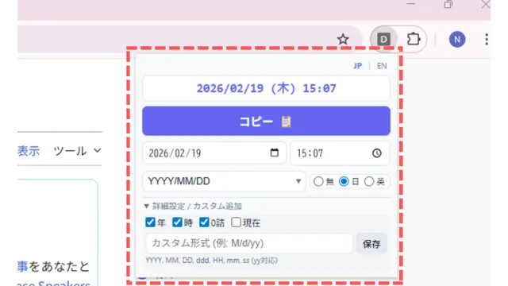
Chrome拡張機能
● Chrome ウェブストアで公開中・9本AI エージェント型の開発環境 Google Antigravity を活用して開発。
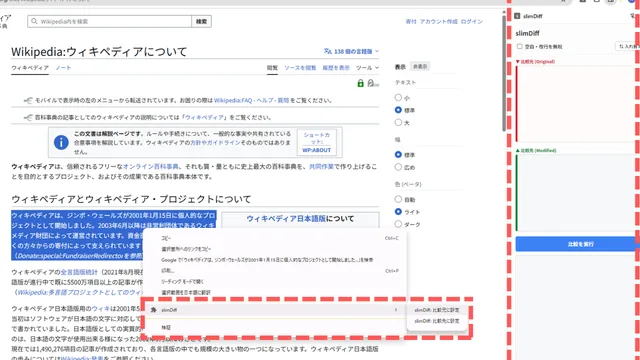
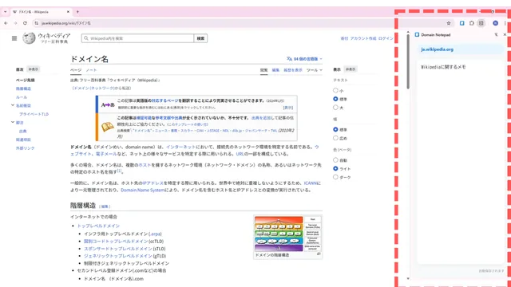
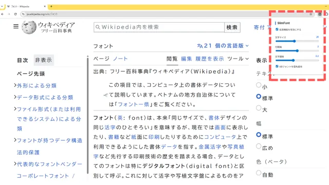
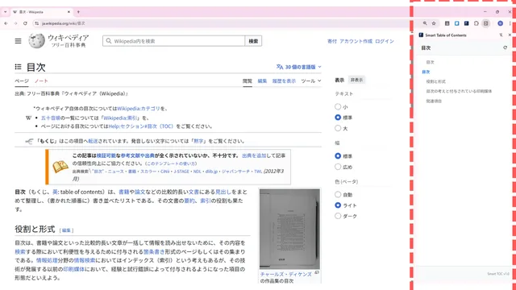
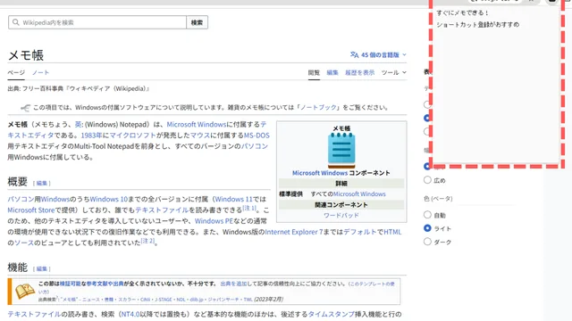
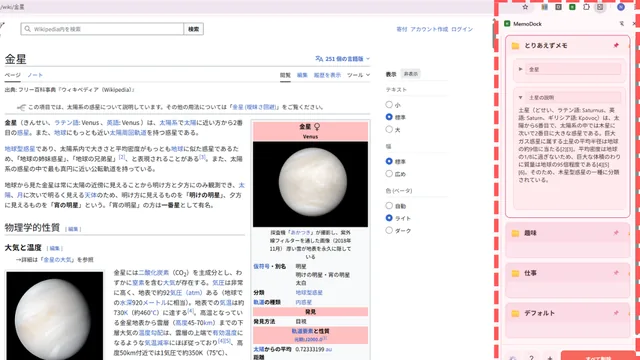
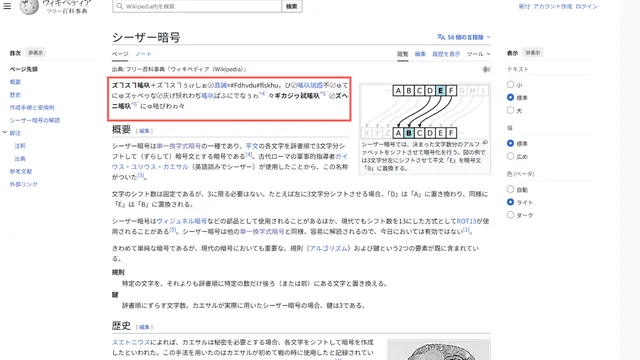
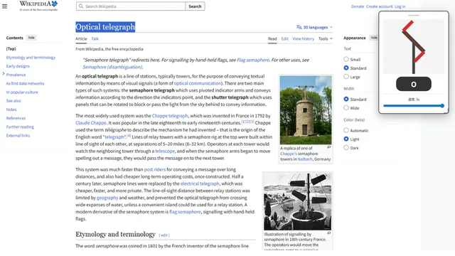
Webアプリ
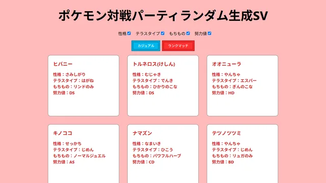
開発系ツール
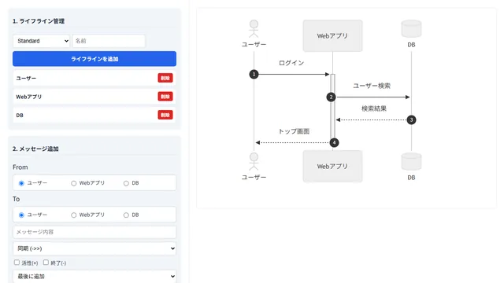
シーケンス図作成ツール
フォームでライフラインとメッセージ（同期・応答・非同期）を追加し、ドラッグで並べ替えながらシーケンス図を作れる。コードのコピーと PNG での保存に対応。
- JavaScript
- Mermaid
- PlantUML
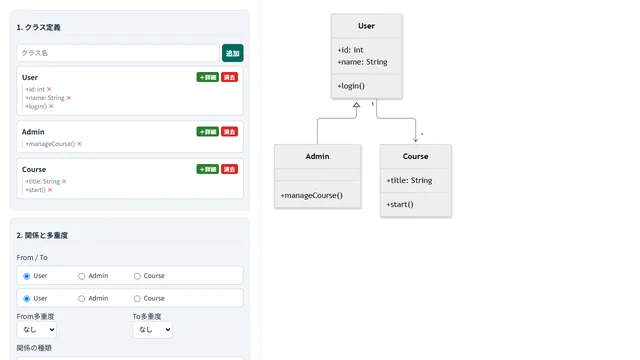
クラス図作成ツール
クラス、属性、操作と、関係（継承・実装・集約・コンポジションなど）や多重度をフォームで指定してクラス図を作れる。コードのコピーに対応（PlantUML版は PNG での保存も可）。
- JavaScript
- Mermaid
- PlantUML
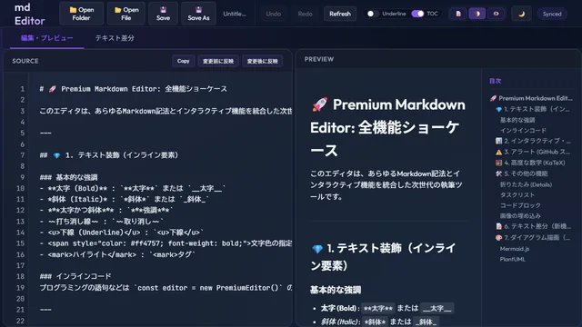
業務系ツール
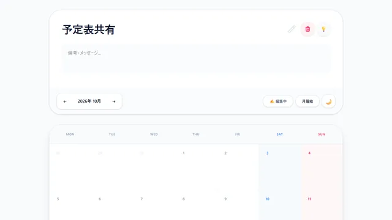
予定共有アプリ
カレンダーで日ごとの都合（○△×）を入力し、URL や QR コードで共有できる。予定は URL の中に圧縮して入れるので、サーバーもログインも不要。
- React
- TypeScript
- Vite
- Tailwind CSS
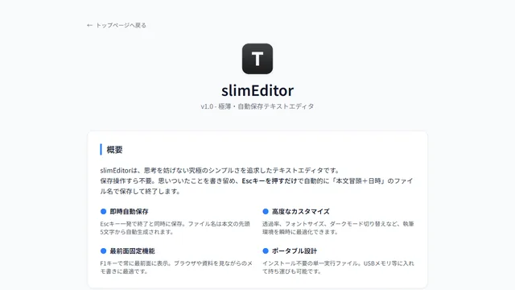
slimEditor
Esc キーを押すだけで自動保存して終了する、Windows 用の軽量テキストエディタ。最前面表示・透過・ダークモードにも対応。
- C
- Win32 API
- GCC (MinGW)
趣味・実験
歴史上の通信方式をブラウザで再現した作品。
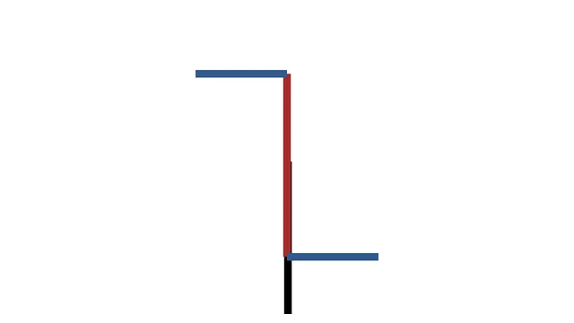
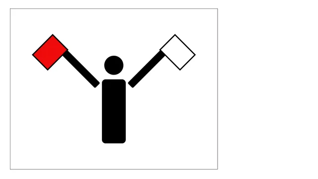
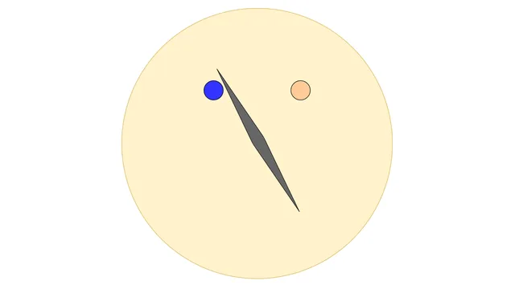
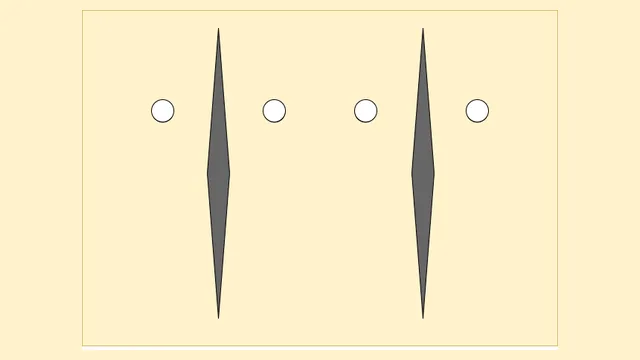
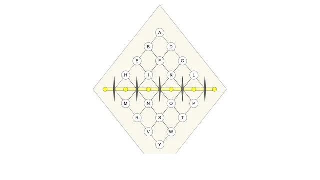
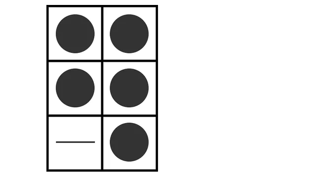